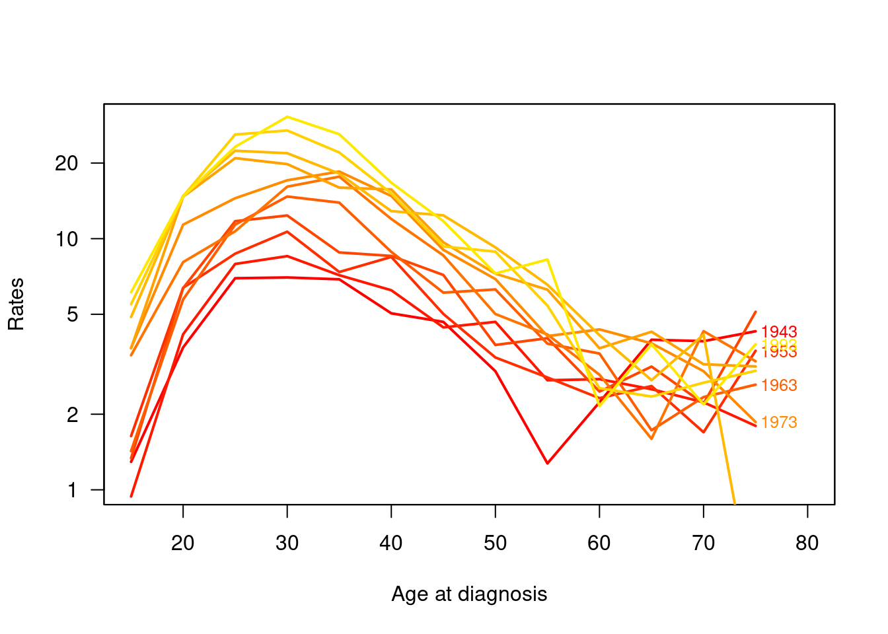
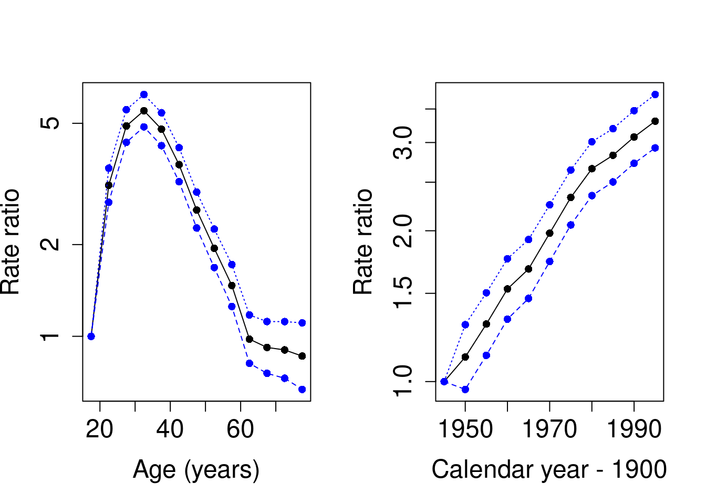
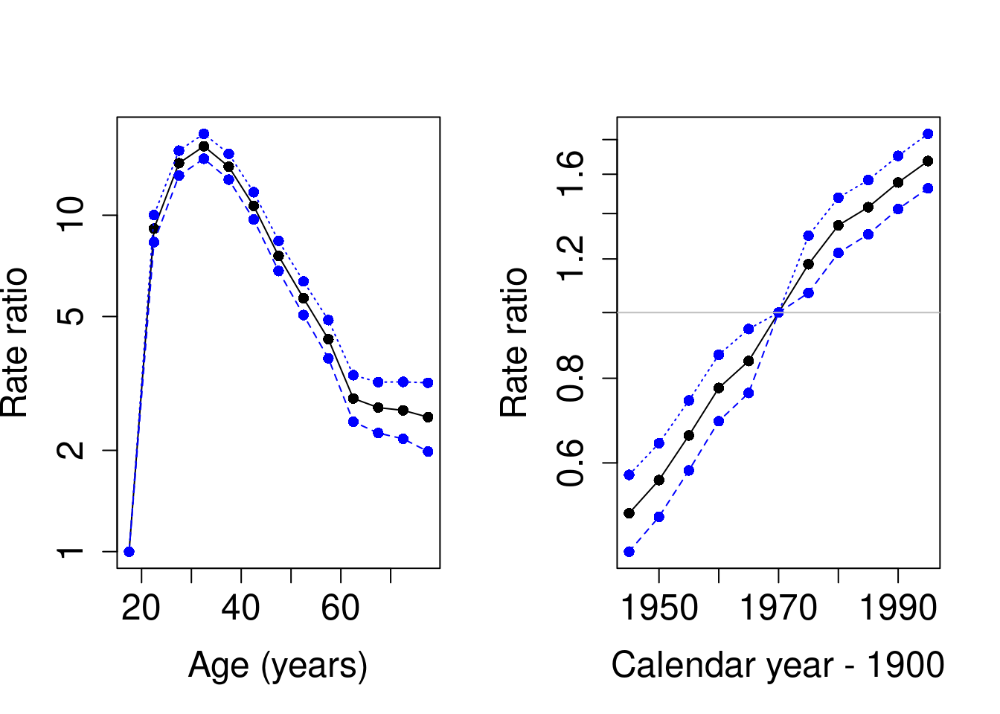
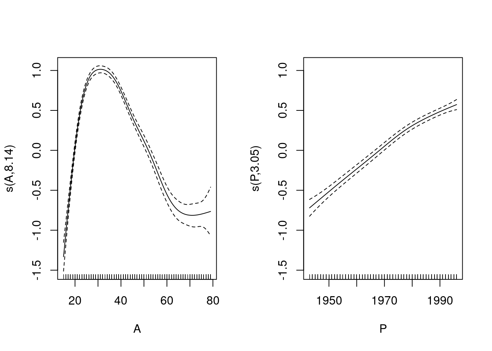
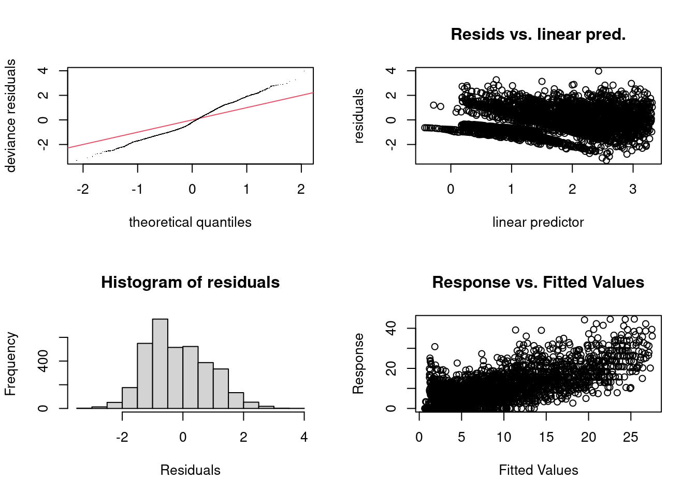
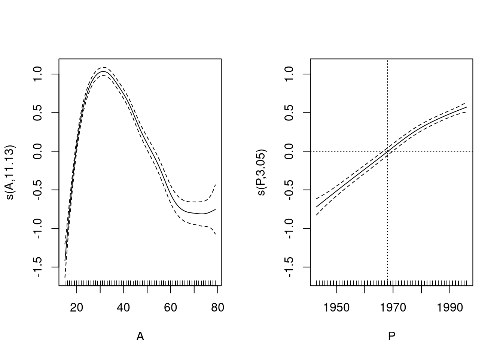
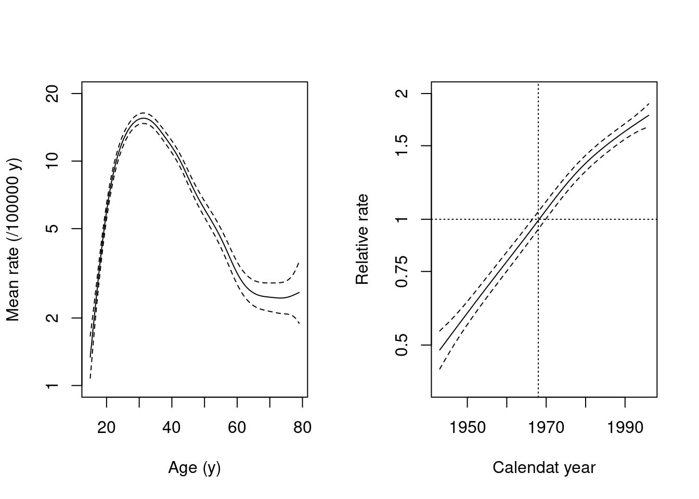

Chapter 8 Poisson regression & analysis of curved effects
This exercise deals with modelling incidence rates using Poisson regression. Our special interest is in estimating and reporting curved effects of continuous explanatory variables on the theoretical rate
We analyse the testisDK data found in the
Epi package.
It contains the numbers of cases of testis cancer and mid-year
populations (person-years) in 1-year age groups in Denmark during
1943-96. In this analysis age and calendar time
are first treated as categorical
but finally, a penalized spline model is fitted.
8.1 Testis cancer: Data input and housekeeping
Load the packages and the data set, and inspect its structure:
## Loading required package: nlme## This is mgcv 1.9-1. For overview type 'help("mgcv-package")'.## 'data.frame': 4860 obs. of 4 variables:
## $ A: num 0 1 2 3 4 5 6 7 8 9 ...
## $ P: num 1943 1943 1943 1943 1943 ...
## $ D: num 1 1 0 1 0 0 0 0 0 0 ...
## $ Y: num 39650 36943 34588 33267 32614 ...## A P D Y
## Min. : 0.0 Min. :1943 Min. : 0.000 Min. : 471.7
## 1st Qu.:22.0 1st Qu.:1956 1st Qu.: 0.000 1st Qu.:18482.2
## Median :44.5 Median :1970 Median : 1.000 Median :28636.0
## Mean :44.5 Mean :1970 Mean : 1.812 Mean :26239.8
## 3rd Qu.:67.0 3rd Qu.:1983 3rd Qu.: 2.000 3rd Qu.:36785.5
## Max. :89.0 Max. :1996 Max. :17.000 Max. :47226.8## A P D Y
## 1 0 1943 1 39649.50
## 2 1 1943 1 36942.83
## 3 2 1943 0 34588.33
## 4 3 1943 1 33267.00
## 5 4 1943 0 32614.00
## 6 5 1943 0 32020.33- There are nearly 5000 observations from 90 one-year age groups
and 54 calendar years. To get a clearer picture of what’s going on,
we do some housekeeping. The age range will be limited to 15-79
years, and age and period are both categorized into 5-year intervals
- according to the time-honoured practice in epidemiology.
8.2 Some descriptive analysis
Computation and tabulation of incidence rates
- Tabulate numbers of cases and person-years, and compute the
incidence rates (per 100,000 y) in each 5 y \(\times\) 5 y cell using
stat.table(). Take a look at the structure of the thus created object
tab <- stat.table(
index = list(Age, Per),
contents = list(
D = sum(D),
Y = sum(Y / 1000),
rate = ratio(D, Y, 10^5)
),
margins = TRUE,
data = tdk
)
str(tab)## 'stat.table' num [1:3, 1:14, 1:12] 10 773.81 1.29 30 813.02 ...
## - attr(*, "dimnames")=List of 3
## ..$ contents: Named chr [1:3] "D" "Y" "rate"
## .. ..- attr(*, "names")= chr [1:3] "D" "Y" "rate"
## ..$ Age : chr [1:14] "[15,20)" "[20,25)" "[25,30)" "[30,35)" ...
## ..$ Per : chr [1:12] "[1943,1948)" "[1948,1953)" "[1953,1958)" "[1958,1963)" ...
## - attr(*, "table.fun")= chr [1:3] "sum" "sum" "ratio"The table is too wide to be readable as such. A graphical presentation is morew informative.
- From the saved table object
tabyou can plot an age-incidence curve for each period separately, after you have checked the structure of the table, so that you know the relevant dimensions in it. There is a functionrateplot()inEpithat does default plotting of tables of rates (see the help page ofrateplot)
## 'stat.table' num [1:3, 1:14, 1:12] 10 773.81 1.29 30 813.02 ...
## - attr(*, "dimnames")=List of 3
## ..$ contents: Named chr [1:3] "D" "Y" "rate"
## .. ..- attr(*, "names")= chr [1:3] "D" "Y" "rate"
## ..$ Age : chr [1:14] "[15,20)" "[20,25)" "[25,30)" "[30,35)" ...
## ..$ Per : chr [1:12] "[1943,1948)" "[1948,1953)" "[1953,1958)" "[1958,1963)" ...
## - attr(*, "table.fun")= chr [1:3] "sum" "sum" "ratio"par(mfrow = c(1, 1))
rateplot(
rates = tab[3, 1:nAge, 1:nPer], which = "ap", ylim = c(1, 30),
age = seq(15, 75, 5), per = seq(1943, 1993, 5),
col = heat.colors(16), ann = TRUE
) Whan can you conclude about the trend in age-specific incidence rates over calendar time? What about the effect of age? Is there any common pattern in the age-incidence curves across the periods?
8.3 Age and period as categorical factors
We shall first fit a Poisson regression model with log link
on age and period model in the traditional way,
in which both factors are treated as categorical.
The model is additive on the log-rate scale.
It is useful to scale the person-years to be expressed in \(10^5\) y.
In fitting the model we utilize the poisreg family object
found in package Epi.
tdk$Y <- tdk$Y / 100000
mCat <- glm(cbind(D, Y) ~ Age + Per,
family = poisreg(link = log), data = tdk )
round(ci.exp(mCat), 2)## exp(Est.) 2.5% 97.5%
## (Intercept) 1.47 1.26 1.72
## Age[20,25) 3.13 2.75 3.56
## Age[25,30) 4.90 4.33 5.54
## Age[30,35) 5.50 4.87 6.22
## Age[35,40) 4.78 4.22 5.42
## Age[40,45) 3.66 3.22 4.16
## Age[45,50) 2.60 2.27 2.97
## Age[50,55) 1.94 1.68 2.25
## Age[55,60) 1.47 1.25 1.72
## Age[60,65) 0.98 0.82 1.18
## Age[65,70) 0.92 0.76 1.12
## Age[70,75) 0.90 0.73 1.12
## Age[75,80] 0.86 0.67 1.11
## Per[1948,1953) 1.12 0.96 1.30
## Per[1953,1958) 1.30 1.13 1.50
## Per[1958,1963) 1.53 1.33 1.76
## Per[1963,1968) 1.68 1.47 1.92
## Per[1968,1973) 1.98 1.74 2.25
## Per[1973,1978) 2.33 2.05 2.64
## Per[1978,1983) 2.66 2.35 3.01
## Per[1983,1988) 2.83 2.50 3.20
## Per[1988,1993) 3.08 2.73 3.47
## Per[1993,1998] 3.31 2.93 3.74What do the estimated rate ratios tell about the age and period effects?
- A graphical inspection of point estimates and confidence intervals can be obtained as follows. In the beginning it is useful to define shorthands for the pertinent mid-age and mid-period values of the different intervals
aMid <- seq(17.5, 77.5, by = 5)
pMid <- seq(1945, 1995, by = 5)
par(mfrow = c(1, 2))
matplot(aMid, rbind(c(1,1,1), ci.exp(mCat)[2:13, ]), type = "o", pch = 16,
log = "y", cex.lab = 1.5, cex.axis = 1.5, col=c("black", "blue", "blue"),
xlab = "Age (years)", ylab = "Rate ratio" )
matplot(pMid, rbind(c(1,1,1), ci.exp(mCat)[14:23, ]), type = "o", pch = 16,
log = "y", cex.lab = 1.5, cex.axis = 1.5, col=c("black", "blue", "blue"),
xlab = "Calendar year - 1900", ylab = "Rate ratio" ) - In the fitted model the reference category for each factor was the first one. As age is the dominating factor, it may be more informative to remove the intercept from the model. As a consequence the age effects describe fitted rates at the reference level of the period factor. For the latter one could choose the middle period 1968-72.
tdk$Per70 <- Relevel(tdk$Per, ref = 6)
mCat2 <- glm(cbind(D, Y) ~ -1 + Age + Per70,
family = poisreg(link = log), data = tdk )
round(ci.exp(mCat2), 2)## exp(Est.) 2.5% 97.5%
## Age[15,20) 2.91 2.55 3.33
## Age[20,25) 9.12 8.31 10.01
## Age[25,30) 14.28 13.11 15.55
## Age[30,35) 16.03 14.72 17.46
## Age[35,40) 13.94 12.76 15.23
## Age[40,45) 10.66 9.71 11.71
## Age[45,50) 7.57 6.83 8.39
## Age[50,55) 5.67 5.05 6.36
## Age[55,60) 4.28 3.75 4.88
## Age[60,65) 2.85 2.43 3.35
## Age[65,70) 2.68 2.25 3.19
## Age[70,75) 2.63 2.16 3.20
## Age[75,80] 2.51 1.98 3.18
## Per70[1943,1948) 0.51 0.44 0.58
## Per70[1948,1953) 0.57 0.50 0.64
## Per70[1953,1958) 0.66 0.58 0.74
## Per70[1958,1963) 0.77 0.69 0.87
## Per70[1963,1968) 0.85 0.76 0.95
## Per70[1973,1978) 1.18 1.07 1.30
## Per70[1978,1983) 1.35 1.22 1.48
## Per70[1983,1988) 1.43 1.30 1.57
## Per70[1988,1993) 1.56 1.42 1.70
## Per70[1993,1998] 1.67 1.53 1.84Let us also plot estimates from the latter model, too.
par(mfrow = c(1, 2))
matplot(aMid, rbind(c(1,1,1), ci.exp(mCat2)[2:13, ]), type = "o", pch = 16,
log = "y", cex.lab = 1.5, cex.axis = 1.5, col=c("black", "blue", "blue"),
xlab = "Age (years)", ylab = "Rate ratio" )
matplot(pMid, rbind(ci.exp(mCat2)[14:18, ], c(1,1,1), ci.exp(mCat2)[19:23, ]),
type = "o", pch = 16, log = "y", cex.lab = 1.5, cex.axis = 1.5,
col=c("black", "blue", "blue"),
xlab = "Calendar year - 1900", ylab = "Rate ratio" )
abline(h = 1, col = "gray")
8.4 Generalized additive model with penalized splines
It is obvious that the age effect on the log-rate scale is highly non-linear. Yet, it is less clear whether the true period effect deviates from linearity. Nevertheless, there are good reasons to try fitting smooth continuous functions for both time scales.
- As the next task we fit a generalized additive model for the
log-rate on continuous age and period applying penalized splines
with default settings of function
gam()in packagemgcv. In this fitting an optimal value for the penalty parameter is chosen based on an AIC-like criterion known as UBRE.
library(mgcv)
mPen <- mgcv::gam(cbind(D, Y) ~ s(A) + s(P),
family = poisreg(link = log), data = tdk
)
summary(mPen)##
## Family: poisson
## Link function: log
##
## Formula:
## cbind(D, Y) ~ s(A) + s(P)
##
## Parametric coefficients:
## Estimate Std. Error z value Pr(>|z|)
## (Intercept) 1.70960 0.01793 95.33 <2e-16 ***
## ---
## Signif. codes: 0 '***' 0.001 '**' 0.01 '*' 0.05 '.' 0.1 ' ' 1
##
## Approximate significance of smooth terms:
## edf Ref.df Chi.sq p-value
## s(A) 8.143 8.765 2560 <2e-16 ***
## s(P) 3.046 3.790 1054 <2e-16 ***
## ---
## Signif. codes: 0 '***' 0.001 '**' 0.01 '*' 0.05 '.' 0.1 ' ' 1
##
## R-sq.(adj) = 0.598 Deviance explained = 53.6%
## UBRE = 0.082051 Scale est. = 1 n = 3510The summary is quite brief, and the only estimated coefficient is the
intercept, which sets the baseline level for the log-rates, against
which the relative age effects and period effects will be contrasted.
On the rate scale the baseline level 5.53 per 100000 y is obtained by
exp(1.7096).
- See also the default plot for the fitted curves (solid lines) describing the age and the period effects which are interpreted as contrasts to the baseline level on the log-rate scale.

The dashed lines describe the 95% confidence band for the pertinent
curve. One could get the impression that year 1968 would be some kind
of reference value for the period effect, like period 1968-72
chosen as the reference in the categorical
model previously fitted. This is not the case, however, because
gam() by default parametrizes the spline effects such that the
reference level, at which the spline effect is nominally zero, is the
overall grand mean value of the log-rate in the data. This
corresponds to the principle of sum contrasts (contr.sum)
for categorical explanatory factors.
From the summary you will also find that the degrees of freedom value
required for the age effect is nearly the same as the default
dimension \(k-1 = 9\) of the part of the model matrix (or basis)
initially allocated for each smooth function. (Here \(k\) refers to the
relevant argument that determines the basis dimension when specifying
a smooth term by s() in the model formula). On the other
hand the period effect takes just about 3 df.
- It is a good idea to do some diagnostic checking of the fitted model
##
## Method: UBRE Optimizer: outer newton
## full convergence after 7 iterations.
## Gradient range [-9.390731e-10,1.362468e-06]
## (score 0.0820511 & scale 1).
## Hessian positive definite, eigenvalue range [0.0002209238,0.0003824007].
## Model rank = 19 / 19
##
## Basis dimension (k) checking results. Low p-value (k-index<1) may
## indicate that k is too low, especially if edf is close to k'.
##
## k' edf k-index p-value
## s(A) 9.00 8.14 0.93 0.010 **
## s(P) 9.00 3.05 0.95 0.075 .
## ---
## Signif. codes: 0 '***' 0.001 '**' 0.01 '*' 0.05 '.' 0.1 ' ' 1The four diagnostic plots are analogous to some of those used in
the context of linear models for Gaussian responses, but not all of them
may be as easy to interpret. - Pay attention to the note
given in the printed output about the value of k.
- Let us refit the model but now with an increased
kfor age:
mPen2 <- mgcv::gam(cbind(D, Y) ~ s(A, k = 20) + s(P),
family = poisreg(link = log), data = tdk
)
summary(mPen2)##
## Family: poisson
## Link function: log
##
## Formula:
## cbind(D, Y) ~ s(A, k = 20) + s(P)
##
## Parametric coefficients:
## Estimate Std. Error z value Pr(>|z|)
## (Intercept) 1.70863 0.01795 95.17 <2e-16 ***
## ---
## Signif. codes: 0 '***' 0.001 '**' 0.01 '*' 0.05 '.' 0.1 ' ' 1
##
## Approximate significance of smooth terms:
## edf Ref.df Chi.sq p-value
## s(A) 11.132 13.406 2553 <2e-16 ***
## s(P) 3.045 3.788 1054 <2e-16 ***
## ---
## Signif. codes: 0 '***' 0.001 '**' 0.01 '*' 0.05 '.' 0.1 ' ' 1
##
## R-sq.(adj) = 0.599 Deviance explained = 53.7%
## UBRE = 0.081809 Scale est. = 1 n = 3510
##
## Method: UBRE Optimizer: outer newton
## full convergence after 6 iterations.
## Gradient range [-2.397829e-12,2.90395e-09]
## (score 0.08180917 & scale 1).
## Hessian positive definite, eigenvalue range [0.00022158,0.0009322215].
## Model rank = 29 / 29
##
## Basis dimension (k) checking results. Low p-value (k-index<1) may
## indicate that k is too low, especially if edf is close to k'.
##
## k' edf k-index p-value
## s(A) 19.00 11.13 0.93 <2e-16 ***
## s(P) 9.00 3.05 0.95 0.095 .
## ---
## Signif. codes: 0 '***' 0.001 '**' 0.01 '*' 0.05 '.' 0.1 ' ' 1With this choice of k the df value for age became about 11,
which is well below \(k-1 = 19\). Let us plot the fitted curves from
this fitting, too
 There does not seem to have happened any essential changes from the previously fitted curves, so maybe 8 df could, after all, be quite enough for the age effect.
- Graphical presentation of the effects using
plot.gam()can be improved. For instance, we may present the age effect to describe the mean incidence rates by age, averaged over the whole time span of 54 years. This is obtained by adding the estimated intercept to the estimated smooth curve for the age effect and showing the antilogarithms of the ordinates of the curve. For that purpose we need to extract the intercept and modify the labels of the \(y\)-axis accordingly. The estimated period curve can also be expressed in terms of relative indidence rates in relation to the fitted baseline rate, as determined by the model intercept.
par(mfrow = c(1, 2))
icpt <- coef(mPen2)[1] # estimated intecept
plot(mPen2,
seWithMean = TRUE, select = 1, rug = FALSE,
yaxt = "n", ylim = c(log(1), log(20)) - icpt,
xlab = "Age (y)", ylab = "Mean rate (/100000 y)"
)
axis(2, at = log(c(1, 2, 5, 10, 20)) - icpt, labels = c(1, 2, 5, 10, 20))
plot(mPen2,
seWithMean = TRUE, select = 2, rug = FALSE,
yaxt = "n", ylim = c(log(0.4), log(2)),
xlab = "Calendat year", ylab = "Relative rate"
)
axis(2, at = log(c(0.5, 0.75, 1, 1.5, 2)), labels = c(0.5, 0.75, 1, 1.5, 2))
abline(v = 1968, h = 0, lty = 3)
Homework
You could continue the analysis of these data by fitting an age-cohort
model as an alternative to the age-period model, as well as an
age-cohort-period model utilizing function apc.fit() in
Epi. See (http://bendixcarstensen.com/APC/) for details.